A mini collection exploring key ingredients unique to the narrative of Chinese food — its birthplace, growth, migration, and consumption. The work investigates legends and traditions associated with Chinese food ingredients, their assimilation in the U.S., and their culinary applications, examining the ethnographic dimensions of food and community through ingredient narratives.
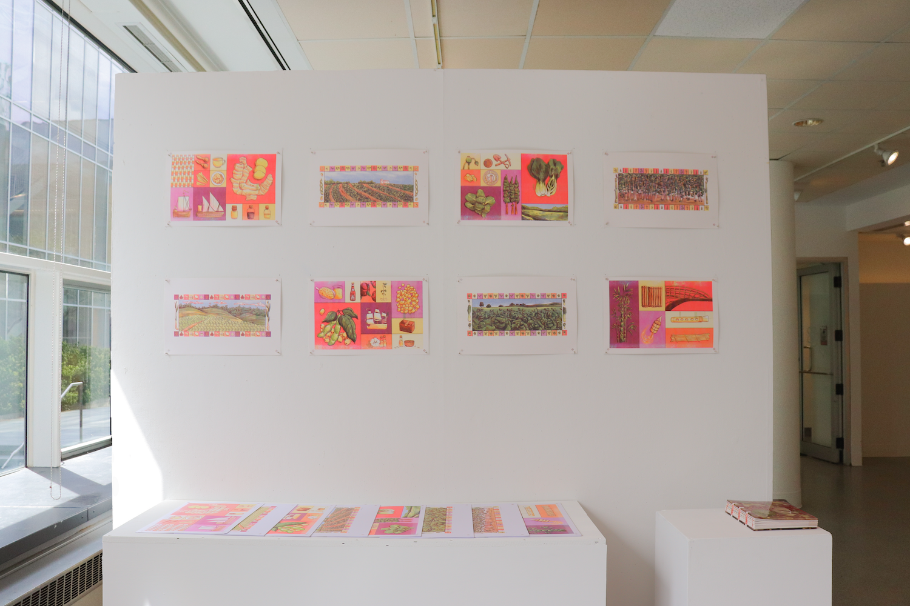
Born in China, Grown in America is a hand-bound publication and series of risograph prints exploring the stories embedded in key Chinese ingredients: bamboo, bok choy, ginger, and soybeans.
The project traces how ingredients carry legends, traditions, and community connections — and how those meanings transform through migration and assimilation in the United States.
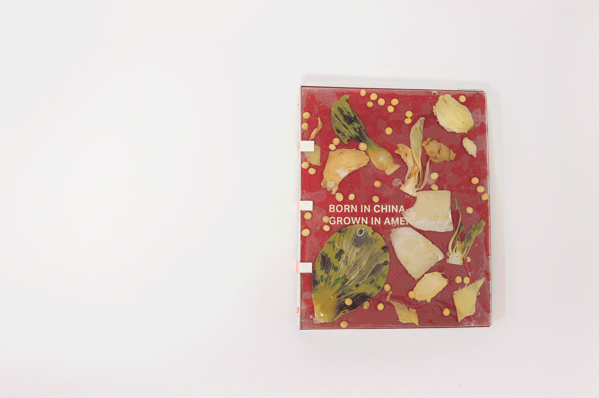
The publication required 36 digital illustrations created in Procreate, printed on Standard White Kraft Cardstock (Kraft-Tone, Cover Weight), and hand-bound. Each spread pairs an ingredient with its story — mythological origins, agricultural history, culinary applications, and its place in Chinese-American life.
The hardcover was made from the ingredients themselves: bamboo, bok choy, ginger, and soybeans cast in resin — making the object a physical argument about what Chinese food is made of.
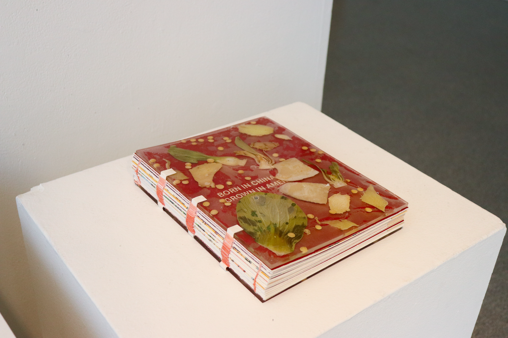
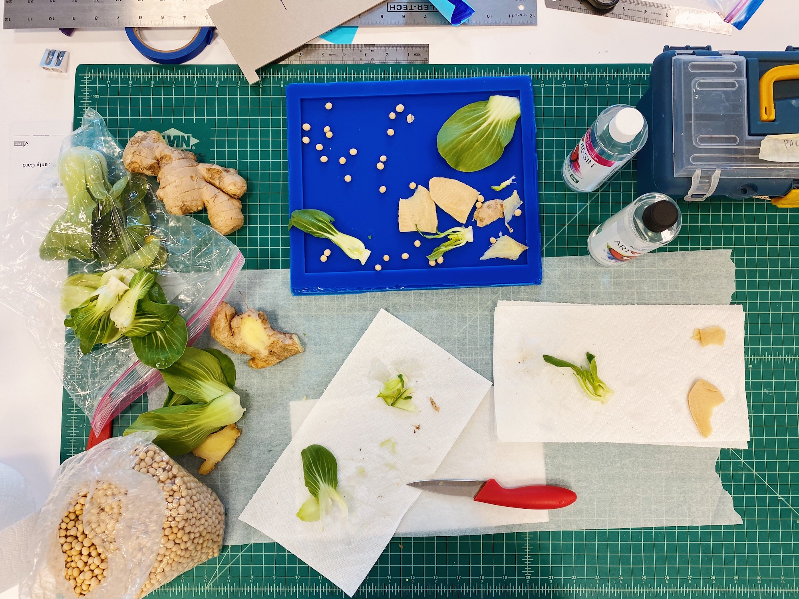
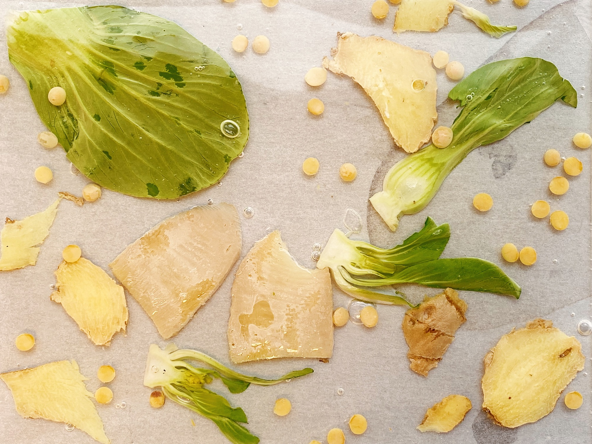
Hardcover created from bamboo, bok choy, ginger, and soybeans cast in resin.
Alongside the publication, a series of risograph prints treats each ingredient as a subject in its own right — rendered with the layered, slightly-imprecise quality that risography produces. The prints were exhibited alongside the bound publication.
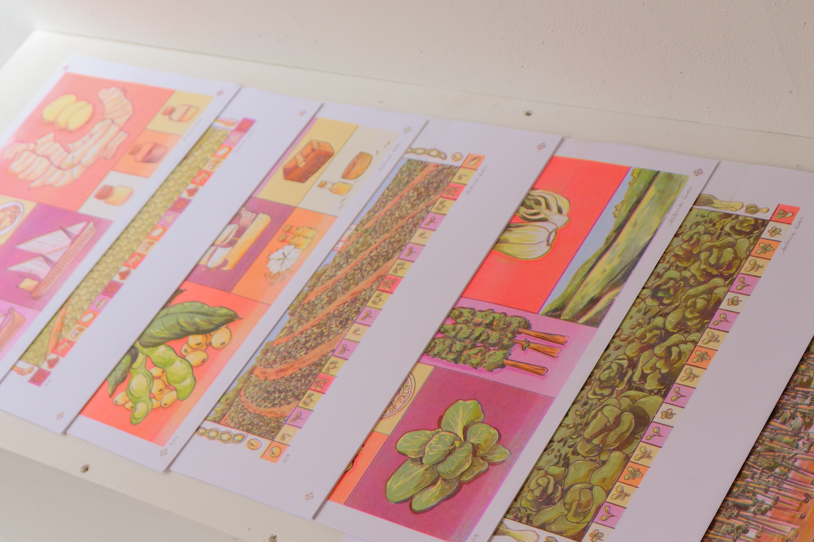
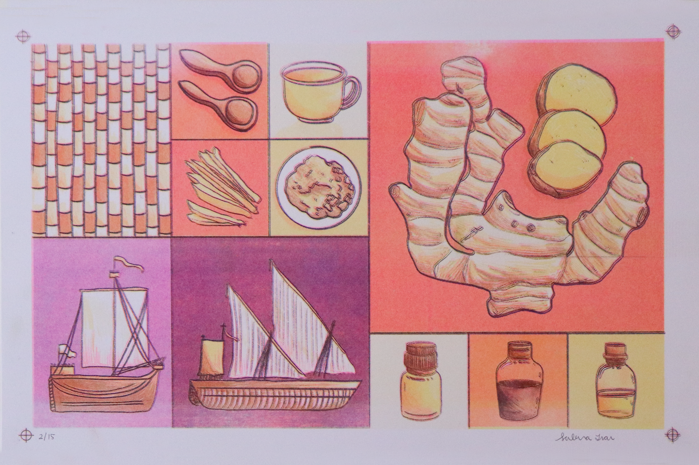
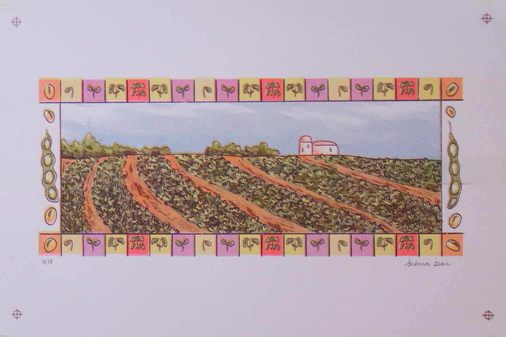
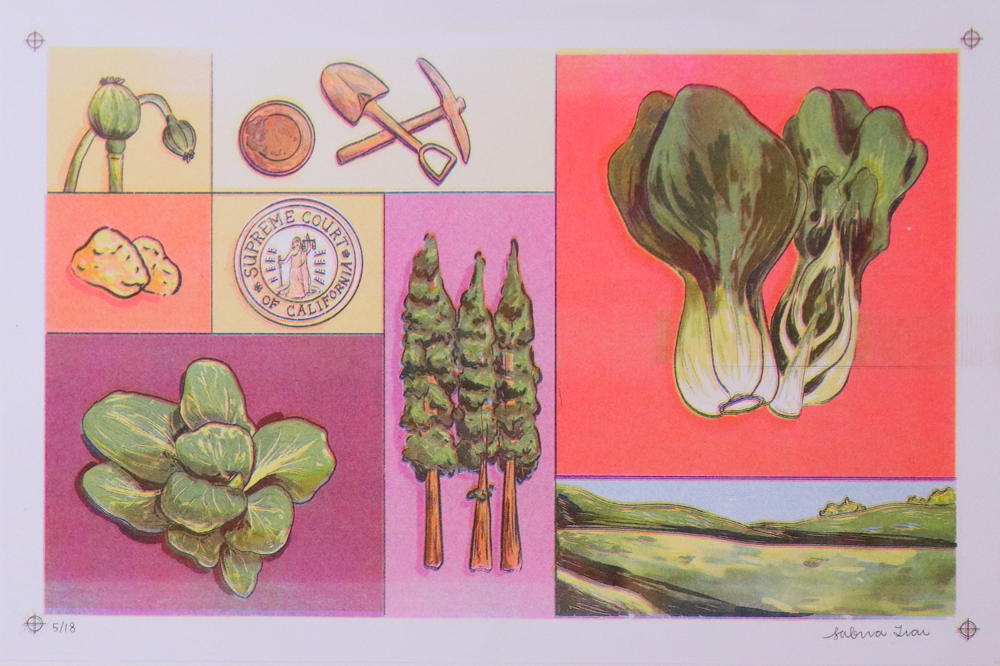
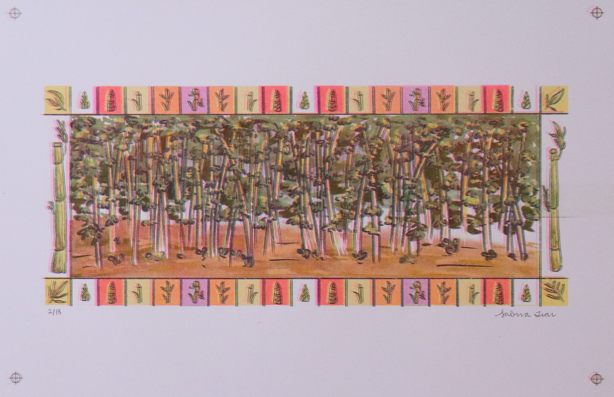
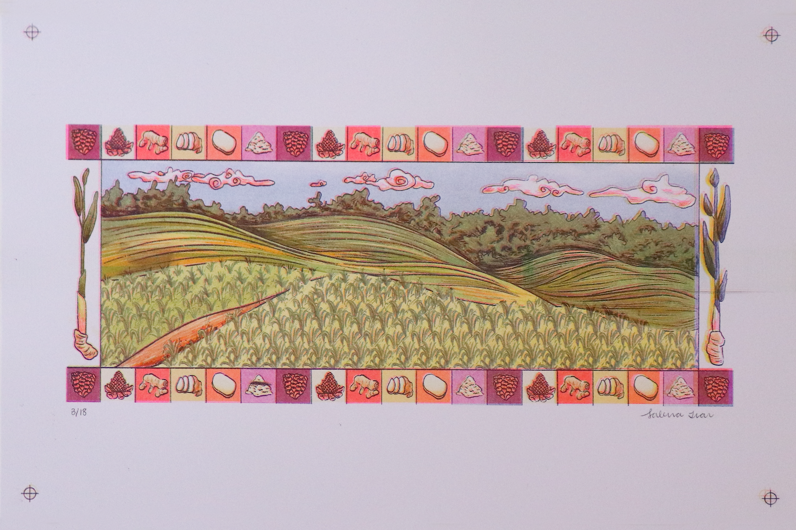
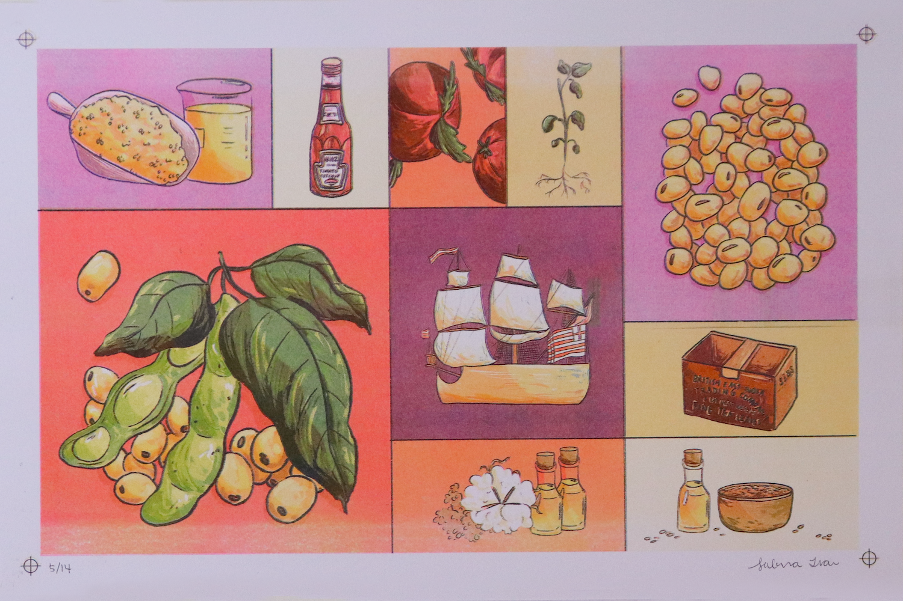
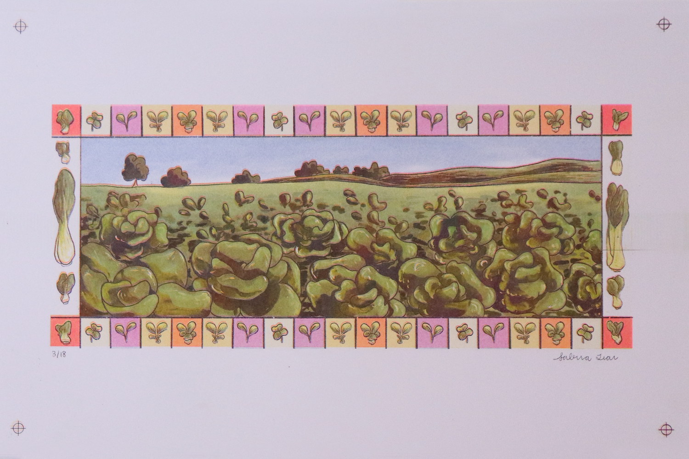
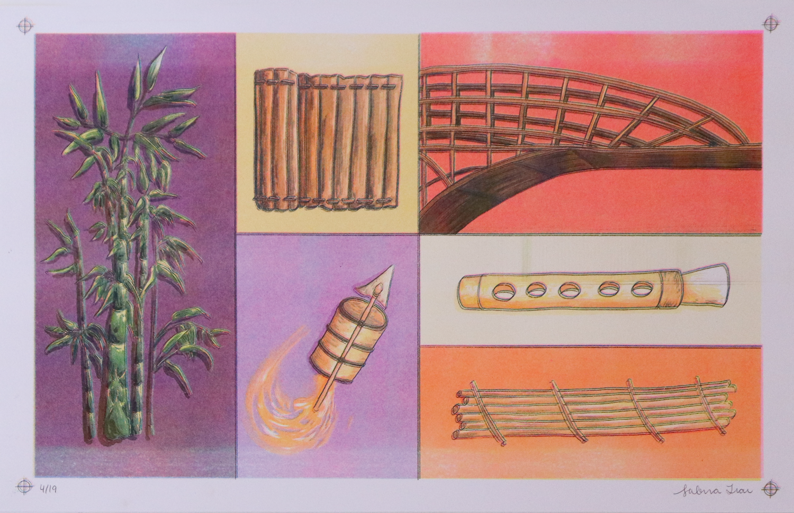
The finished work — publication, resin-cast hardcover, and risograph prints — was exhibited as part of the Design Senior Seminar at the University of Pennsylvania. The project asks what it means to narrate food: not just its flavor or nutrition, but its history, its displacement, and its role in communities far from where it first grew.